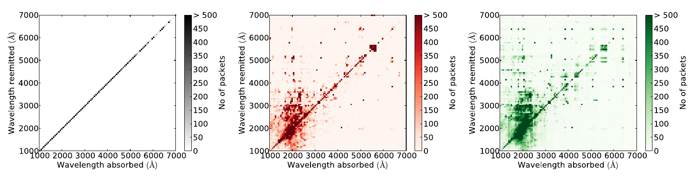

Line Interaction Treatments¶
TARDIS currently offers different ways to handle line interactions, which may be activated via the YAML configuration file. Independently of the chosen treatment, a number of steps are always carried out when a Monte Carlo packet performs a line interaction. Since TARDIS adopts the indivisible energy packet formalism (see Discretization), the packet will have the same energy in the co-moving frame after (f for final) the line interaction as before (i for initial). Thus, after accounting for the frame transformations
holds. Also, TARDIS treats that the re-emission of the line interaction as an isotropic process. Thus,
Note
In the Sobolev theory, the re-emission direction is given by the so-called Sobolev escape fraction, with is in general non-isotropic. However, in the special case of homologous expansion, isotropy is retained.
Note
Strictly speaking the re-mission process occurs in the local co-moving frame. Thus, the so called angle abberration effect should be taken into account when transforming into the lab frame. However, TARDIS, currently neglects this effect.
Essentially, the different line interaction treatments only determine how the frequency of the packet after the line interaction is determined.
Resonant Scattering¶
The simplest line interaction mode assumes that all interactions with atomic line transitions occur resonantly. This implies that in the co-moving frame the emergent packet frequency is equal to the incident one. Again accounting for the Doppler factors due to the frame transformations between co-moving and lab frame, the post-interaction frequency is given by
Downbranching¶
The so-called downbranching scheme, introduced by [Lucy99b], is an elegant approach to approximately account for fluorescence effects. In this scheme, the packet is not re-emitted in the same transitions as it was absorbed in. Instead, it now can emerge from any line transition linking the activated upper energy level to a lower one. For any specific line interaction event the re-emission channel is probabilistically selected according to the branching ratios of the different allowed de-excitation transitions. For more details about the downbranching scheme, we refer to [Lucy99b] and [KerzendorfSim14].
Macro Atom Scheme¶
Finally, as the most sophisticated line interaction treatment, a simplified version of the Macro Atom scheme of [Lucy02] and [Lucy03] is implemented in TARDIS. This approach provides a more accurate representation of fluorescence processes and multi-line effects. Once a Monte Carlo packet is absorbed in a certain line transition (macro atom activation), an arbitrary number of internal jumps up and downwards may be performed. One may think of them as changing the energy level which is excited. At any point during this process, there is the change that the internal jump procedure terminates and that the packet is re-emitted in a transition linking the currently excited upper energy level to a lower one (macro atom deactivation). Again, all involved processes are governed by probabilities reflecting the different line transition strengths, radiative emission and absorption processes. More details about the implementation of the Macro Atom scheme in TARDIS is provided here. For more background information and an in-depth derivation of the scheme, we refer to [Lucy02] and [Lucy03].
Comparison¶
The different levels of sophistication are illustrated in the following plot, taken from [KerzendorfSim14] and showing the incident and versus the emergent wavelength of Monte Carlo packets in line interactions. The left panel shows the situation in the resonant scatter mode, the middle one for the downbranching scheme and the right one the macro atom results.
{kind=link}